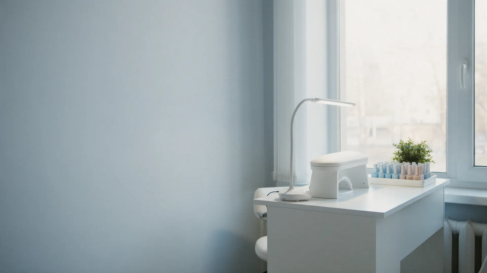
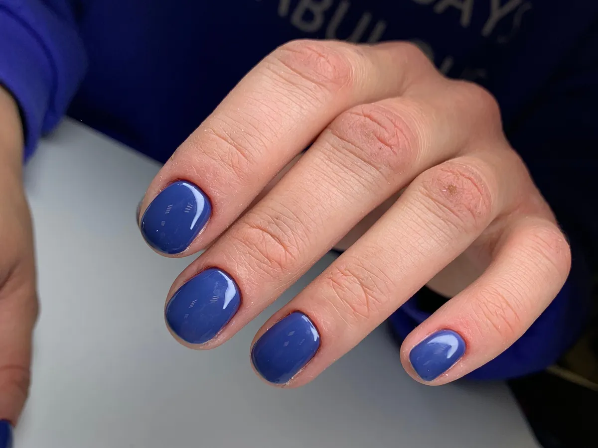
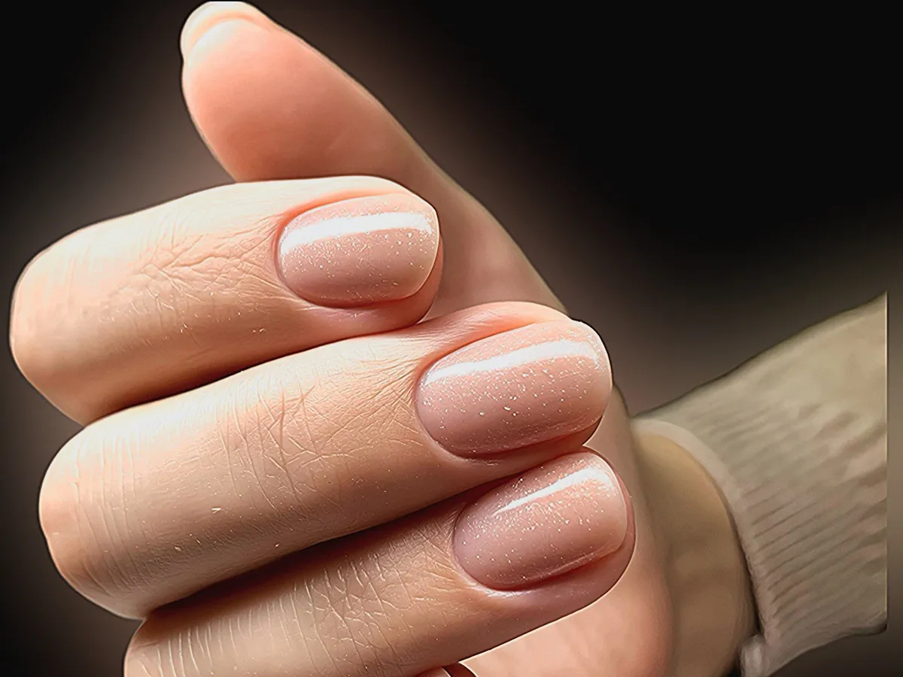
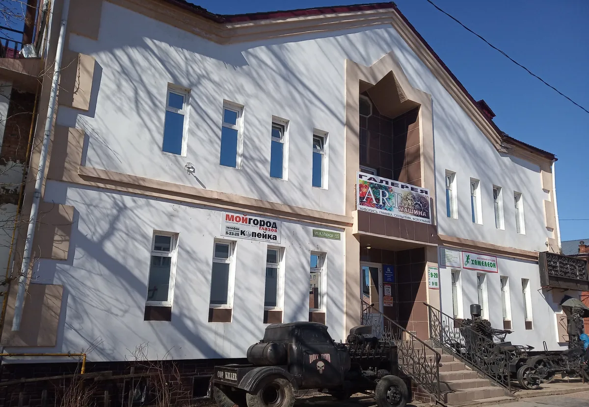

Мастер маникюра и бровей на Карла Маркса, 55
Маникюр и брови в Глазове у частного мастера
Арина Бузикова делает маникюр и оформляет брови. Работы мастера - в фото ниже, записаться можно по телефону или во ВКонтакте.

- Маникюр и брови у одного мастера
- Пн-пт с 09:00 до 20:00, сб и вс с 10:00 до 18:00
- Запись по телефону или во ВКонтакте
Услуги и цены
На карточке Яндекс.Карт цен нет. Направления ниже взяты с карточки, цены назовут при записи.
Маникюр
- Маникюруточнить
Брови
- Оформление бровейуточнить
Цены назовут при записи.
Как записаться
- 01
Позвонили или написали
По телефону +7 (912) 441-98-63 или во ВКонтакте.
- 02
Назвали услугу
Маникюр или брови.
- 03
Узнали цену
Цену назовут при записи.
- 04
Пришли на Карла Маркса, 55
Первый этаж.



Коротко о мастере
Один мастер
Маникюр и брови делает Арина Бузикова.
Работы на фото
На карточке Яндекс.Карт опубликованы работы мастера.
Часы на неделю
Будни с 09:00 до 20:00, выходные с 10:00 до 18:00.
Запись во ВКонтакте
Можно написать мастеру, не звоня.
Контакты
- Адрес
- Карла Маркса, 55, 1 этаж, Глазов
- Часы
- Пн-пт 09:00-20:00, сб и вс 10:00-18:00
- Телефон
- +7 (912) 441-98-63